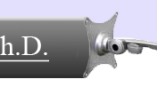
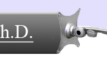

-Education- -Experience- -Affiliations- -Honors- -Research- -Grants- -Services-
Teachings Fall 2020
Spring 2019
Spring 2017
Other Semesters:
Back to top Useful Links Related to Robot Design:
- 6.270 MIT’s Autonomous Robot Design Competition, http://web.mit.edu/6.270/
- Acroname Inc. for easy robotics, sensors, kits, etc, http://www.acroname.com/
- Lynxmotion Inc. for robots, parts, and accessories, etc, http://www.lynxmotion.com
- Handy board, http://www.handyboard.com/
- Comprehensive list of sensors and links, http://www.pacific.net/~brooke/Sensors.html
- Interactive C User’s Guide, etc., http://www.newtonlabs.com/ic/
- On-line resources related to LEGO, http://web.me.unr.edu/me151/resources.htm
- The Electronic Goldmine: cheep motors, electronics components, http://www.goldmine-elec.coml
Back to top
|


 
